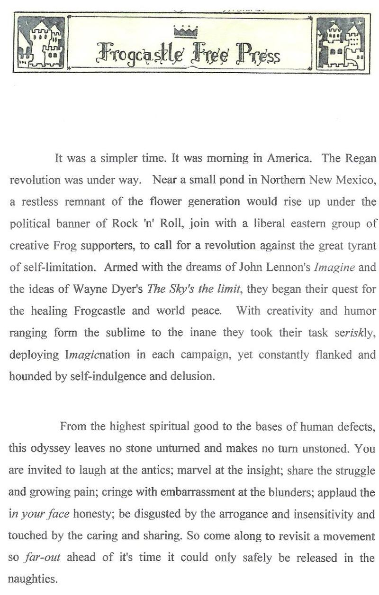
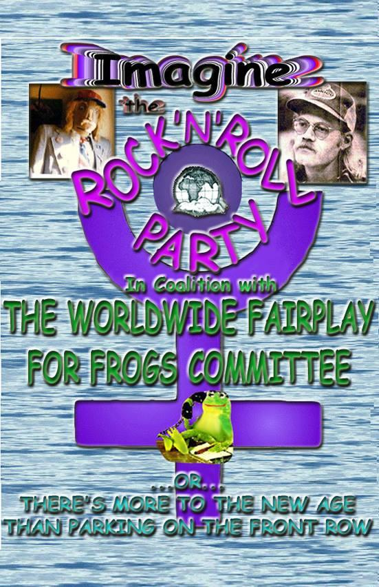
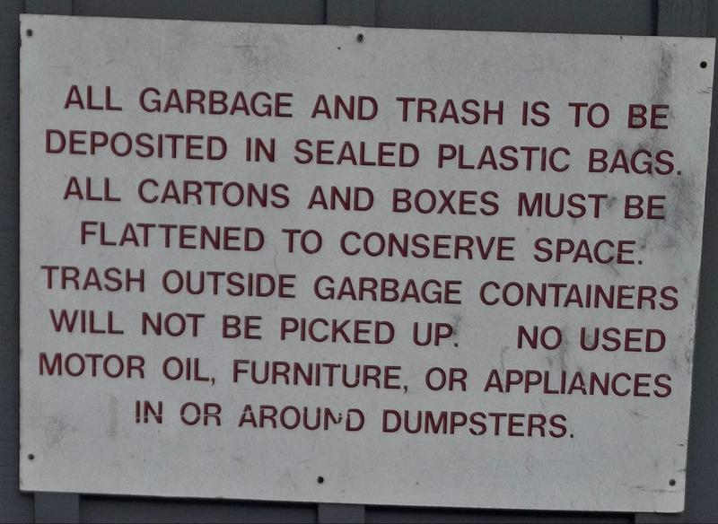
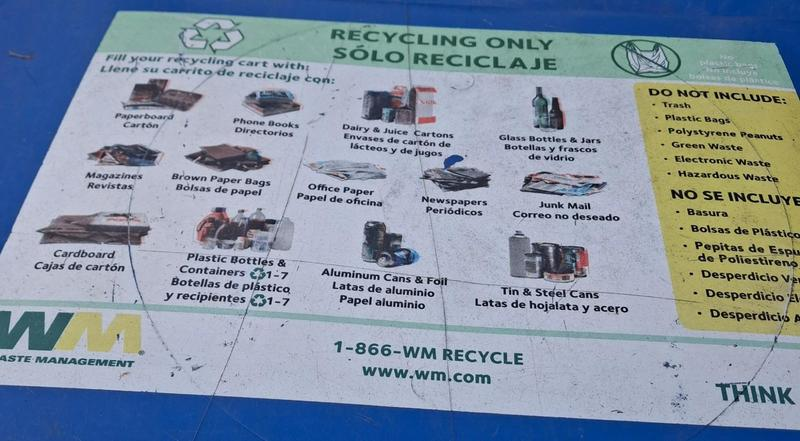
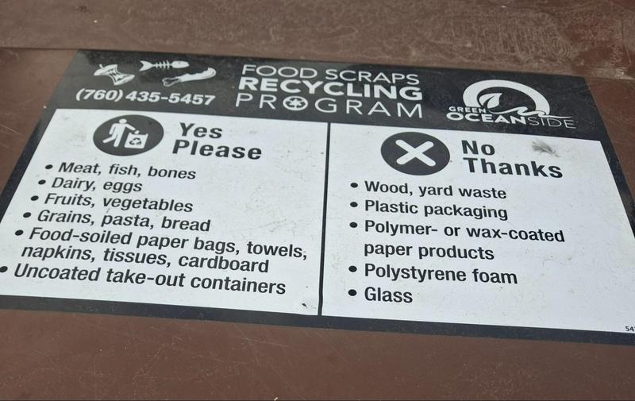
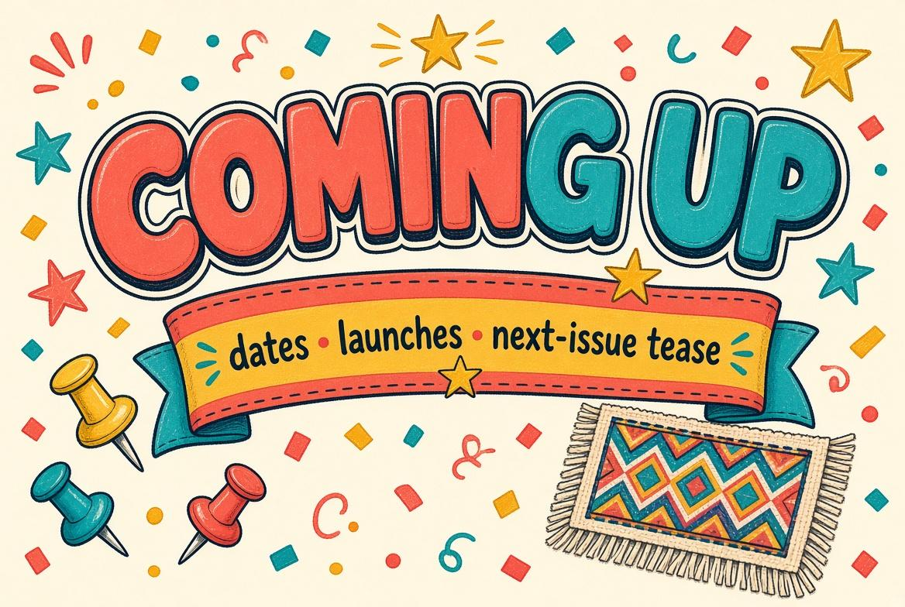
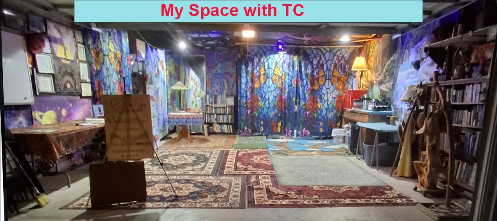
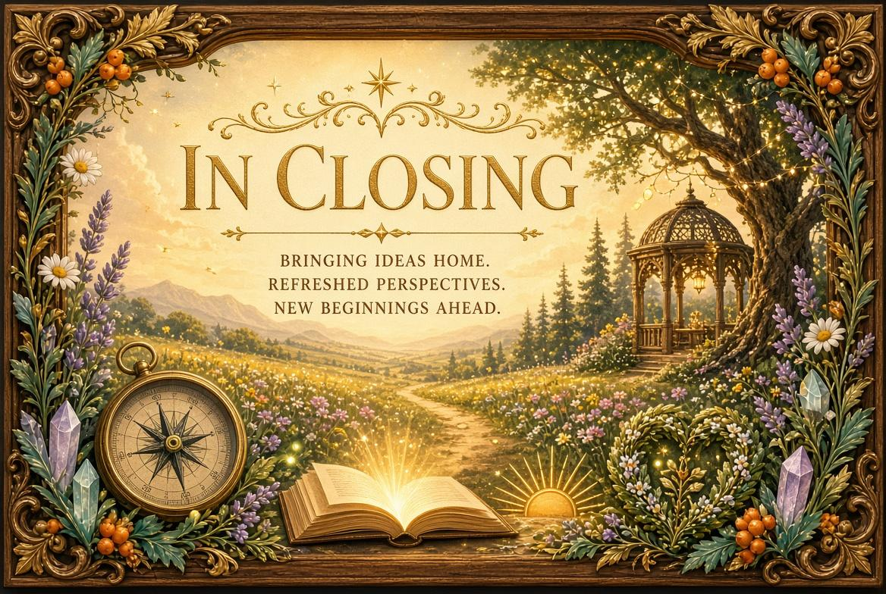

PEPPERWOOD COMMUNITY NEWSLETTER
Information & Entertainment to build community unity
NEWSLETTER NAME · ISSUE [##] · [MONTH YEAR]

Welcome to the revised Pepperwood Community Newsletter. Some readers felt the last issue was too long, so this edition includes a table of contents. You can browse the full document or jump straight to the articles that interest you. Just select the article you want and hit bookmark.
As I opened up to the community, the first thing I noticed was the friendly welcome—and how much I had been missing while isolating in my room. Then the conversations went deeper, the plot thickened, and I felt an undercurrent of tension. That tension is this issue’s headline story
Cleaning up the Mess
I shoot from the hip and clean up the mess. It appears that calling my garage makes it look like an official amenity or a place open to the public, and that can pull in the association, your insurer, and local rules. And to be honest I prefer one on one.
So let it be known that this is not. It is now officially “My Space with TC” A place to talk about what it means to be an intentional mutual aid community and the pro and cons of that and to explore my vision of people in small communities interconnected making collective decisions will lead to a new form of self government that makes the current system of government obsolete.
The opening will now be a gathering of people on the pepperwood email list and friends they may bring for an introduction to TC and My Space.
1. “We won’t have a society if we destroy the environment.” – Margaret Mead
Our environment is everything that surrounds us and to which we are related. We do not exist separate from our environment but are part of it – a mutually supportive living universe.
We need to sense this relationship and experience ourselves as part of a healthy world. This means building new relationships, making new connections, getting in touch with ourselves and with the beauty of everything that surrounds us. Let’s move outward and explore and cherish the world in which we live. We belong there and need to nurture it as well as ourselves. This relationship gives us the energy to reach out and care.
Let’s work together for healthy relationships in a healthy environment where we feel at home.
2.This is your newsletter, so if you want to add, suggest, or contribute in any way, email me. I also grow from your feedback. It is very much appreciated.
Remember that our strength and resilience comes from our diversity.
3.
Oceanside Measure S — November 3 ballot
Oceanside voters will decide Measure S on Nov. 3. If approved, it would add a half-cent sales tax for 10 years (about 8.25% to 8.75%), starting around April 2027 and ending April 2037. The city estimates about $20 million a year. Groceries, prescriptions, diapers, and feminine hygiene products stay untaxed. Extra cost: about 5¢ on $10, 10¢ on $20. This is a notice only—not an endorsement. Details: ci.oceanside.ca.us (search Measure S). Ballots arrive in early October.
4.
5. Edgar Casey's prophetic Vision in general was not describing America's destruction. He was describing its rebirth.The catastrophe and the transformation were not separate events, they were two faces of the same evolutionary process. What appeared as collapse was actually the dismantling of structures that could no longer contain the Consciousness that was emerging.
What Edgar Casey actually saw when he looked Beyond 2027… not through the lens of fear, but through the lens of initiation… not as the end of America but as the beginning of what he called the nation's true purpose. He also said repeatedly with absolute conviction, “America's greatest test will become its greatest Awakening”.
Casey was not seeing punishment descending upon a sinful Nation, he was seeing initiation on a national scale, the kind of Dark Night of the Soul that precedes every genuine transformation; just as an individual must confront their Shadow before they can integrate their light, a nation must face theTruth of what it has been before it can become what it is meant to be.
Be of good cheer, practice positive thinking; be authentic, maintain your integrity and accountability; be kind and friendly.

Book review


Dean the Poet reviews the book Here.
You can read the whole book 30 pages at a time at discord>imagine my book># book only.
Dumpster Hygiene
One advantage of condo life is freedom from lawn care, exterior building maintenance, facilities upkeep, and dumpster service. What happens inside our homes—and how we use the commons—is still a personal responsibility. Following the posted rules at the pool and dumpster areas is essential for safety, harmony, and staying clear of fines.



As a longtime resident, one-time dumpster diver, and self-appointed community organizer, I have learned that keeping the dumpsters free of fines and pests has fallen on one person. We may be free of many homeowner chores, but dumpster hygiene belongs to all of us. I went down to the dumpster and photographed the dumpster and recycling rules.
To be honest, I have broken a few of those rules myself. That means I can do better, and I am asking others to do better with me—to look out for one another and take community duty more seriously. I believe we obey the rules we have to, to break the ones we want to. I do not want this to turn into a management crackdown under the CC&Rs (Covenants, Conditions, and Restrictions). Our waste habits have already worn down the one resident who has carried this load alone. If we ignore the rules, we risk fines, hard feelings, and unrest.
This is also something we can rally around. A shared goal—keeping the dumpster and recycling area orderly—can build solidarity and leave us with a clear conscience. Think of it this way: without air you last minutes, without water days, without food weeks; without a BM you will not last long either. Like personal hygiene, dumpster hygiene matters for the health of the whole community.

This is the “My Space with TC” inauguration Invitation

Subject: You're Invited: My Space with TC Open garage.
Hello everyone,
My name is TC. I am a retired carpenter. I have lived in Pepperwood Villas for 35 years. Come to inaugurate My Space with TC! I’ve transformed my garage into a safe space to gather, share ideas, and visions of our community where we can all live happily together.
When: Saturday, October 10th, 10 AM-3 PM
Where: The Garage.
Please drop by to see “My Space with TC” and share a cup of coffee, tea or a cool beverage and snacks. Your presence is the only thing requested—bringing a beverage of your choice is welcome but entirely voluntary.
Any questions write me at Happy2btct@gmail.com
Positively, TC

The rush is over. I got up, came into the garage, and found no orders coming in and the tasks already finished. I thought, now what? Now is the time to enjoy the space and help a mutual aid community take root.
I hope my intensity, and all the talk of intentional mutual aid and the mycelium network, hasn’t made you think I’m offering one more thing to do. Everyone is already busy just trying to make sense of the end of the United States empire and an unknown future, at a moment when it is getting harder to survive and get by. When I talk about intentional mutual aid communities and a vast interconnectedness among them, I am not suggesting something to do. I am suggesting something to be. Be of good cheer — positive. Be authentic, so your words and actions match. Be friendly and kind.
We don’t have to work at building community. All we want to do is meet, get to know each other, have fun, and enjoy our time together. As the central government declines, fails us, and restricts our freedom, and as jobs as we know them disappear, we will by nature come together with intention and work for our mutual good. The struggles we face alone today will become shared endeavors, once we experience that two people can accomplish more in one day than one person can do in two.
So let’s start by meeting each other, having fun, and taking moments away from the chaos.
Until the next newsletter be of good cheer, spread unconditional love and be a friend
Thanks for reading.
Reply to this issue · Share with a colleague · [Subscribe link]
Unsubscribe · Forward to a friend · Page